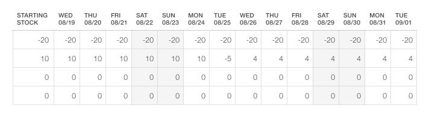

Table types
Lists
Lists are mainly used to display, compare and/or monitor data organized in rows.
The recommended default row height is 2,5 x font size. When space is limited, a compact row height of minimum 2 x font size can be used for read-only lists.

List with default row height 2,5 x font size (ex. 30 px)
List with compact row height 2 x font size (ex. 24 px)
Lists with interaction
Many lists contain inline controls, actions or drilldown to sub-levels. Typically used when it should be possible to edit or change settings or values, or to select and perform actions on one or more elements in the list.
The recommended minimum row height for lists with interaction is 2,5 x font size (ex. 30 px), to allow sufficient space for controls.
List with inline controls
List with drilldown to sub-level
Matrix table
Matrix tables consist of cells organized in rows and columns, and typically contains numerical data. The cells can be read-only or editable.
The recommended minimum row height for matrix tables is 2,5 x font size (ex. 30 px), to ensure good legibility and allow sufficient space for controls.
